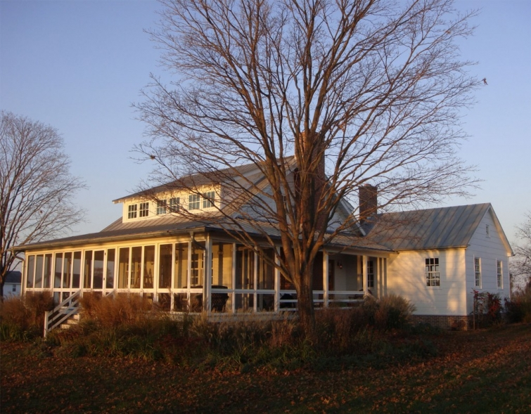
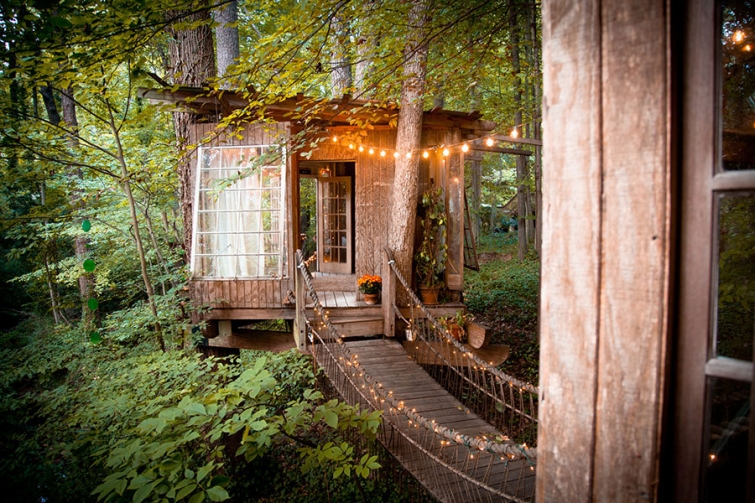

.png)
.PNG)
.PNG)
.PNG)
.PNG)
.PNG)
.JPG)
.JPG)
.PNG)
.PNG)


source
Happy Almost Fall Weekend! I hope your weekend is being spent doing things you like to do with people you love. Here are a few totally unrelated things that caught my eye this week. 🙂 Have fun checking them out!
Doesn’t this house looks like a perfect one for a fall weekend?
I’ve found a treehouse (really a group of 3 connected by bridges) in Atlanta (of all places!) that you can actually spend the night in. Check them out here.
airbnb.com
Did you get the early fall catalog from Talbots this week? I LOVED this outfit (and especially the cute rainboots!)
And Pottery Barn has their Thanksgiving and Christmas sneak peeks out. These Santa plates and mugs are mighty tempting! 🙂 Have you seen them?
Restoration Hardware discontinued their much loved dish soap long ago, so I have been looking for some that is sold in a similar understated package. This is what it used to look like, and I have refilled my bottle over and over for many years.
After much searching, I finally found a very similar one at Jenny Steffens Hobick’s online shop. I ordered it as soon as she put out her fall stock.

I ran across this recipe for a chicken dish that looks wonderfully delicious. (How can anything with chicken, mushrooms, and bacon taste bad??) I think we will be making it this coming week.
When I was doing research for some back to school decorating inspiration, I found this very uplifting dinner. Read all about it here.
KariAnne from Thistlewood Farm shared her previous home this week. It is mind blowing beautiful. Truly.
Be sure you read all of the story behind it because the story is even more beautiful than the house.
And I will leave you with a few laughs because everyone should spend part of their weekend laughing, right?
I think you will love these Martha bloopers.
Enjoy your weekend. 🙂


.PNG)
I love random! It can be so refreshing, don’t you think? Thanks for sharing it all! I think I will try that chicken recipe too! Looks great. I use an old lotion bottle with a squirt top for my dish soap in the kitchen. A couple of pumps keeps me from over using the soap. The porch sunset was beautiful! I love to sit in our front porch swing and watch it set. You should come join me sometime! Fall and winter are best, because the leaves are off the trees and you can actually see the sun set. haha. We can build a bon fire and sip on some hot chocolate! 😉
———————————————————————-
An old lotion bottle is a great idea Jayne! It would be fun to watch a sunset from a front porch swing…a nice and relaxing way to wind down the day. I am ready for some cool weather in which to enjoy a bon fire and some hot cocoa.
Kelly
Kelly: Put clear Dawn (help clean the oil soaked ducks) in a clear wine bottle, size of your choice and add a pour spout.
Looks great on the sink. From our friend, Martha Stewart.
Keep writing and inspiring us!
———————————————————————
I remember them using Dawn on those poor animals with the Exxon disaster. The wine bottle with pour spout is a good idea…guess I need to really thank Martha for that. 🙂
Thank you for your sweet comment.
Kelly
My daughter’s wedding was Saturday. Everything went as planned. We were so afraid of rain once the tents were up and we saw what happened when it did rain. The tents did not leak but water ran through on the ground like a river. Prayers were answered because it didn’t rain. Katrina’s daughter went into labor and that was announced at the reception. (Precious little baby boy!) I wish I could show you some photos! I am not sure I am ready for fall.
——————————————————————–
I know you are happy everything went as planned, and that it is all over, Kathy! I know it was beautiful. 🙂 And what a happy coincidence that Katrina’s grandchild was born on the same day. How exciting!
Kelly
You always find the greatest vacation places – adore the tree house. I actually ordered a few things from the new Talbot’s catalog – got me excited for Fall!
——————————————————————–
I loved that treehouse, and I could not believe it was in the middle of downtown Atlanta. I guess it shows you really can still find wonderfully private places anywhere if you leave some trees. 🙂 I am with you on the Talbot’s catalog getting me excited for fall…so ready for a change of wardrobe!
Kelly
I love these sites — I went right over to Pottery Barn to check out the Christmas stuff! Also, if you like the chicken recipe, you should try some of the other recipes from that site — I’ve used one that I have pinned as just “Kayotic Chicken” that is to die for.
———————————————————————
Glad you liked the Christmas dishes! I get excited when the Christmas things start coming out – even if it is only September. 🙂 Thanks for the heads up on the chicken dishes…will check it out!
Kelly
Kelly,
Oh my goodness, I love the idea of sleeping in a tree house and these look especially charming. I loved the screened porch on the lake too.
I love Jenny’s store, every time I order something I’m always so happy not only with the product but the packaging. She really does such a great job.
That chicken dish looks dangerous and delicious. As soon as our weather switches from the 90’s to the 70’s I’m cooking it.
The MS blooper is hilarious.
I like this rundown post…have you done it before. It’s always fun to find a couple of new sites in the bargain.
xo,
Karen
———————————————————————
Wasn’t that treehouse amazing Karen? I like Jenny’s store too…waiting on red towels for Christmas to come out. Hope your weather turns to fall soon.
I have done several of the random posts..just look for Talk of the Weekend and you will find a few more with assorted goodies. 🙂
Kelly
Kelly,
That Talbots outfit is so you…except everything dark blue needs to be black for you. I have made that Country club chicken recipe and it is to die for! My husband requests it all the time. It even freezes well and can be reheated in the oven for a quicker week night dinner! I got to go check out that Pottery Barn stuff asap! Thanks for sharing.
——————————————————————-
Good grief you have my wardrobe pegged…even down to the black for the blue! Hmm…maybe I need to branch out in my style more. LOL Thanks for the suggestion to freeze the dish. I will probably need to half it anyway now that I am not feeding the entire crew anymore.
Hope you find lots of PB things to buy!
Kelly
Kelly, you do know how to torture. I’m drooling over those first two pictures. Amazing home and property. Oh, porch love. Sigh! That chicken dish looks wonderful. I mean come on, mushrooms, bacon and all that gravy! I will definitely try it. That Talbots outfit is about what I was sporting the other night at my niece’s housewarming party. Yes, mark the calendar. The sandals were tucked away and it was a quilted jacket and knee high boots for the evening. Quite a few of the gals were of the same mindset. So enjoying these temporary cooler temperatures here in the Midwest. Ok, so how dare you sneak that Pottery Barn Santa ware in your post. Really Kelly, you’ve gone commercial on us? I forgive you. Yeah, now I am going to go click and check it out! 🙂
———————————————————————-
Debra, that house was most certainly droolworthy, wasn’t it? Lucky you with your fall temps that let you wear the cute clothes! Oh yeah, I’m commercial all the way. LOL I’ll do commercials for Pottery Barn Christmas anytime of the year. 🙂
Kelly
Oh, that second picture with the sun and the porch literally took my breath away! In fact, I’m quite sure my heart said something along the lines of, “That’s where you belong.” 🙂 I enjoyed perusing PB’s sneak peeks yesterday–so many beautiful things that I am running out to buy a lottery ticket today…
Enjoy the rest of your weekend!
——————————————————————-
I know just what you mean about that feeling of “That’s where you belong.” I get that every time we ride by a lake around here. Send me a lottery ticket too! I am in bad need of a winning one.
Kelly
Thanks for some inspiration on this cool Sunday morning!! I plan to watch the Martha bloopers this afternoon. Who can resist seeing the Martha goof up? Not me.lol
——————————————————————-
They are hilarious! I was surprised that she would even allow them to be out for public viewing. 🙂
Kelly
Spending the week at my “Happy Place”– and enjoying your posts. Watching the sunrise every morning, walking the beach, collecting shells, getting a little sun and salt air trying to get over a really bad cold I acquired traveling last week. I truly loved all the school themed decorations and thinking about fall in NYC and now today’s post. Will go back and check out all these links. Hoping to paint small artificial pumpkins today and make a chicken pot pie and salad for lunch. Looking forward to a cool down here in FL. Had some wonderful light tempura shrimp ( just for you:)) and a lovely clam chowder and crisp haddock! Have a great week, Kelly!
——————————————————————-
Are you just trying to make us all jealous Louvina??! LOL So sorry you have had a cold, but if you are going to have it, at least you are at an amazing place (definitely better than all the humidity and heat here in Georgia…with no walks on the beach.) I thought you might like all the school-y things AND NYC. How smart of you to get ahead on the fall things (or am I just behind?) I hope you enjoyed your shrimp. My son sent me a photo of his breakfast in Portland, Oregon this week…shrimp and grits. 🙁 You all are just rubbing it in! They finally arrived in Seattle yesterday after a 10 day roadtrip.
I hope you get over your cold and have a great week too.
Kelly
Do you know what I love about this on a Sunday morning? It’s like my conversations with a friend on our walk~~ all over the place about the things we like to talk about!
——————————————————————–
Too funny! (But it’s true…and it drives my husband crazy when our conversation does this. 🙂 )
Kelly
Kelly, I just ordered the everyday Occasions dish soap and their indigo tea towels. Thank you for introducing me to this company. Decided to put this new chicken recipe on my menu for this week. Looks delicious. I truly enjoy following your blog and as a retired language arts middle school teacher, I would give you A+’s.
———————————————————————-
🙂 Thanks Sandy! I am hoping Jenny is going to have red tea towels in her winter line, and I will order mine then. I can’t decide if I want to serve that chicken with rice or pasta like it shows in the recipe. It looks very similar to a dish I loved at a nearby restaurant that has closed, and their chicken was served with pasta…so pasta may be my choice this time. Enjoy the rest of your weekend!
Kelly